今天跟明天的內容會來介紹 Web3 世界裡有哪些需要注意的資安風險，以及作為使用者我們可以怎麼預防資產被盜走。經過前面 25 天的內容我們已經對 Web3 技術有許多了解，可以幫助我們深入理解每種攻擊跟防禦的原理。
有些人把區塊鏈比喻成黑暗森林，原因是有大量的攻擊手法持續出現，只要稍有不慎自己的資產就有可能陷入危險，而過去也有許多業界知名人士遭駭的案例，就算是資深玩家也難以倖免。
慢霧是間在 Web3 算知名的資安審計公司，他們有一份區塊鏈黑暗森林自救手冊（中文版在這裡），裡面詳細介紹了許多攻擊的手法與如何防禦，他們用以下這張圖來總結所有的面向：
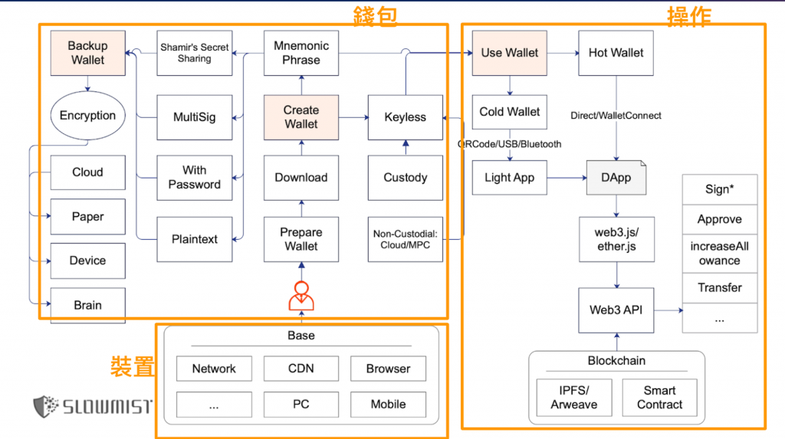
橘色的部分是我加上的，粗略把這張圖分成三塊：操作、錢包和裝置。操作指的是當使用者用錢包進行任何 DApp 操作時，可能被攻擊的點。裝置指的是若使用者的裝置本身被入侵的風險。錢包則是關於錢包 App 的資安風險、私鑰與註記詞的保存等問題。今天會先介紹操作的問題以及平常使用 DApp 時應該要注意哪些東西。
舉個常見的案例，在 Twitter 或 Discord 等社群平台上有許多幣圈的社群跟廣告，常常會有詐騙的人在上面宣傳甚至直接密你，把他的東西包裝成可以領取某個獎勵或是 NFT 引導我們點進去。這時可能會看到像這樣的網頁：
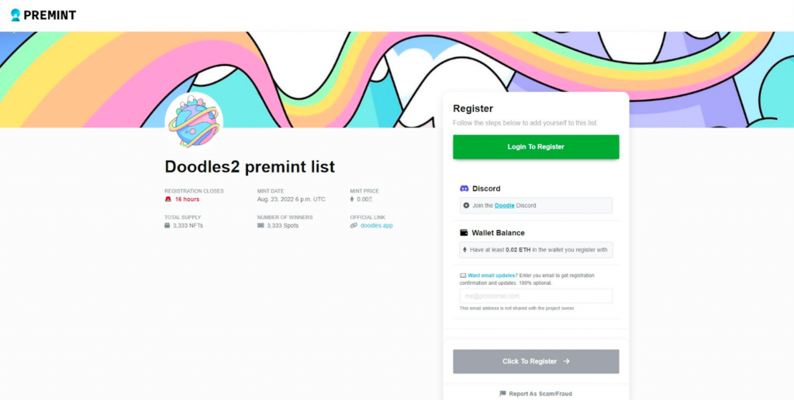
看起來很正常，但輸入完資訊按下一步送出後跳出了這個簽名的請求：
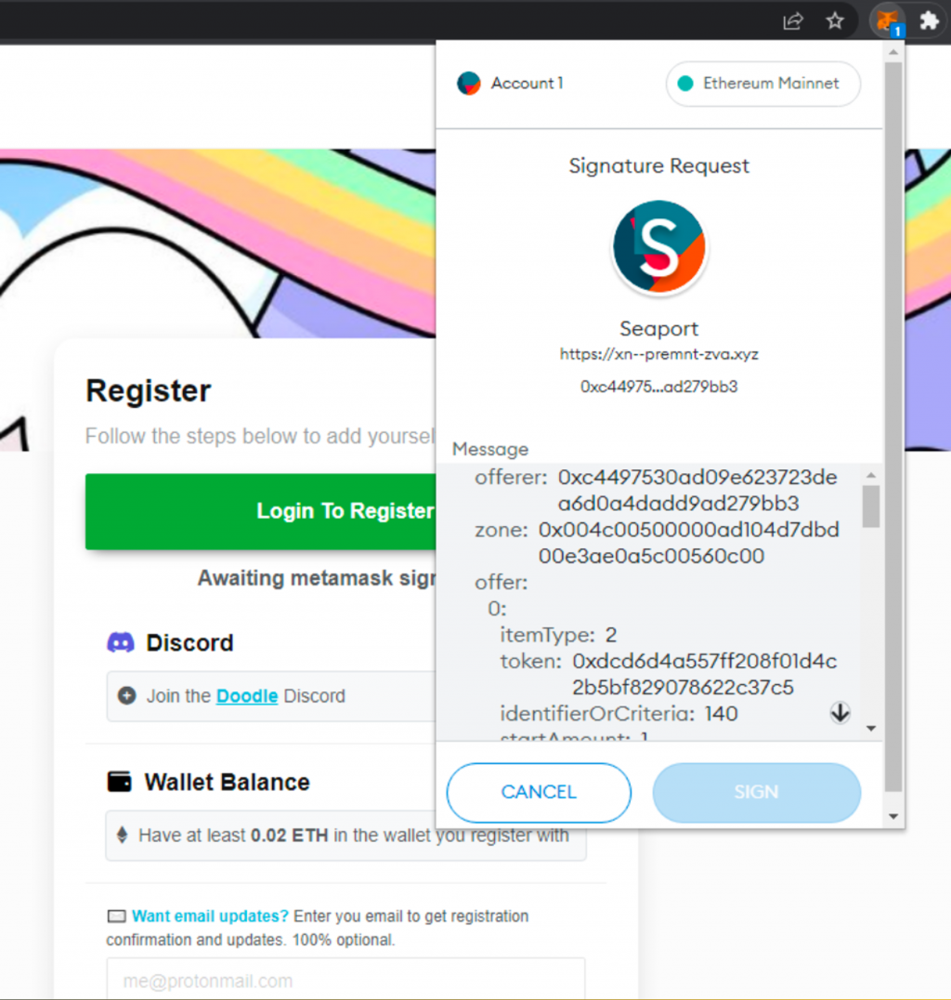
如果對一般看不懂簽名請求的使用者來說，可能來不及看懂這裡面在做什麼就按下簽名了，而這時最嚴重的情況會導致他的 NFT 全部都被轉走！原理今天會提到，但這正是區塊鏈操作的可怕之處：所有釣魚網站都會做得很精緻，目的就是要誘導使用者按下簽名，而在 Web3 世界任何操作都代表價值的流動或資產轉移，對駭客來說只需要花相對低的成本就可以取得很高的報酬，而且金流還能透過 Tornado Cash 之類的服務做到無法被追蹤。
特別是近幾個月出現越來越多知名 KOL 或知名 Web3 項目的 Twitter 被駭（最常見是透過 SIM Swap 攻擊），導致官方帳號貼出了釣魚網站的資訊，許多人就會信以為真進去操作，往往造成大量的資產損失。
因此接下來會列舉幾個常見的範例來讓讀者理解怎樣的操作可能會有風險，因為在錢包 App 中的確認訊息是不可能被偽造的（除非連 Metamask 都被發現漏洞），錢包 App 跳出來的彈窗內才是最正確的內容，不管網頁上寫他是要送你一些幣還是免費 mint 一些 NFT 都不能相信。
首先一個常見的風險是直接呼叫 ERC-20 的 approve 方法或是
ERC-721, ERC-1155 的 setApprovalForAll方法，把自己的 Token
或 NFT 授權給別人，這個在 Metamask 的確認頁面中就看得出來：
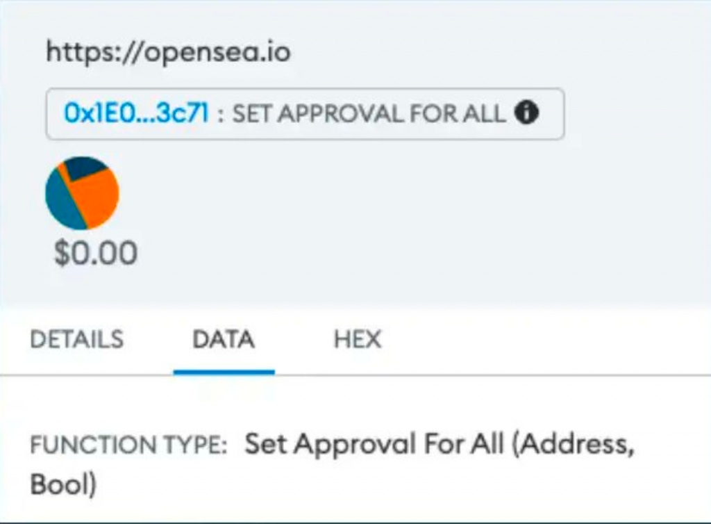
因此如果在確認頁面中看到 Approve 或 Approval
相關的字眼就要特別小心，。但這類型操作有時比較難分辨的原因是像在
Uniswap, Opensea 等知名平台上也會有需要使用者 Approve
資產的操作，也會使用到 approve 或是
setApprovalForAll
方法。因此要準確的區分就必須檢查當下互動的合約地址是否真的是該協議的地址，例如把地址貼到
Etherscan 上查詢。
另外一個可以再次確認的是 Approve 的對象，也就是授權哪個地址使用自己的資產。現在 Metamask 中會顯示 Approve 交易的細節，點擊 Verify third-party details 可以看到當下正要 Approve 的 spender 是誰：
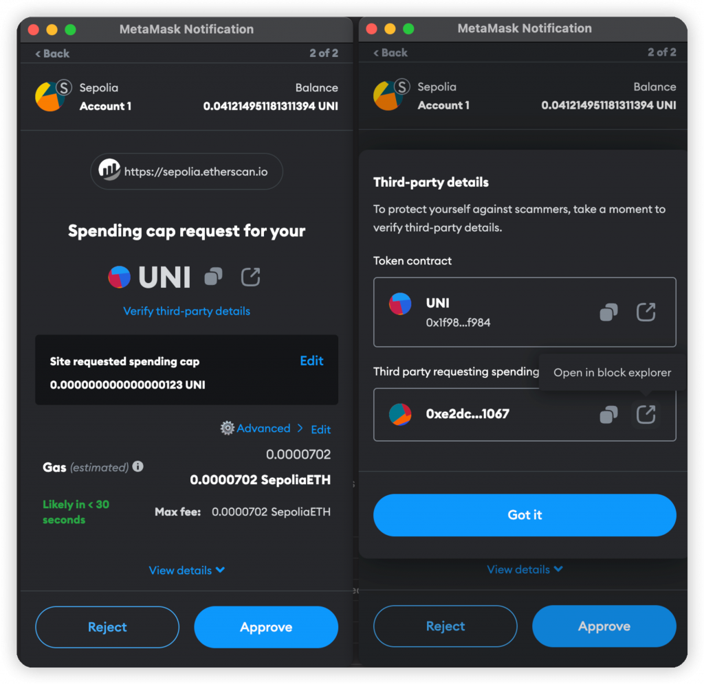
在惡意的網站通常他會要求你 approve 一個 EOA 地址可以使用你的資產，而這就是最大的風險：駭客可以持續監聽鏈上的狀態，只要發現有人 Approve 了他的 EOA 地址使用一些資產，就馬上用那個 EOA 發交易把受害者的資產全部轉走。因此點擊 Open in block explorer 查看是授權給哪個地址也是很重要的。
這是在 NFT 交易盛行時常見的一種詐騙手法，也是誘導使用者簽名，而這次簽名的東西是「允許零元購」的 Typed Data，呈現的範例就是一開始詐騙案例圖中的樣子，該範例是要求簽名一個 Seaport 的訊息。
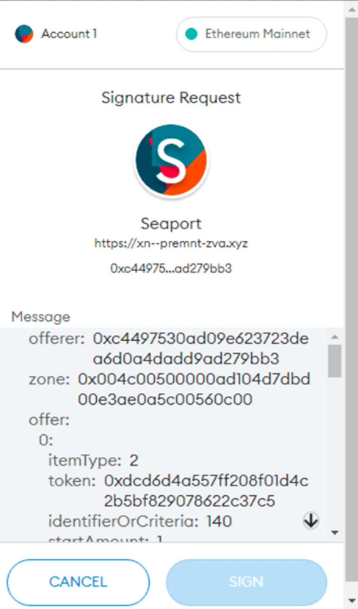
那麼 Seaport 到底是什麼以及他的風險為何？它其實是 Opensea 提出的 NFT marketplace 的合約標準，Opensea 的官方文件有詳細的解釋：https://docs.opensea.io/reference/seaport-overview
但這個協議很複雜很難短時間內完全理解，因為他支援買賣雙方可以用任意數量的 ERC-20, ERC-721, ERC-1155 Token 來交易，例如我拿 1 ETH + 一個 Azuki NFT 跟你換兩個 Beanz NFT 加一個 Otherside 土地的這種交易，非常有彈性。
不過對用戶來說主要的操作就是：在掛賣 NFT 前先 Approve Opensea 的合約使用自己的 NFT，並且簽名一個 Seaport 的 Typed Data 來代表「我願意用 xxx 價格賣出這個 NFT」的訊息，這樣未來的買家若看到滿意的 NFT 想購買，就只要把賣家已經簽好的 Signature 搭配自己發出的 ETH 送到 Opensea 的 Seaport 合約中，若通過 Seaport 合約的驗證它就會自動把對應的 NFT 轉給買家、ETH 轉給賣家（並抽一些手續費）。這樣的好處是對賣家來說不需要預先把手上的 NFT 轉給 Opensea 就能掛賣並由其他人成交。
因此這就是駭客可以利用的點：搭配 Seaport 協議的彈性，釣魚網站可以先偵測該受害者所有的 NFT collection，判斷哪些 collection 是他已經有 Approve 過 Seaport 合約使用的，找出來後騙受害者簽名一個類似「我願意用 0.0001 ETH 賣出 3 個 Azuki、5 個 BAYC、2 個 MAYC」這樣的訊息，若受害者上當他就可以馬上拿這個簽章到 Seaport 的合約去成交這筆交易，也就等同於把受害者的所有有價值的 NFT 全部轉走了。
幾個月前就有位受害者因為這個釣魚事件，被轉走了十幾個 BAYC 損失超過千萬，非常可怕。
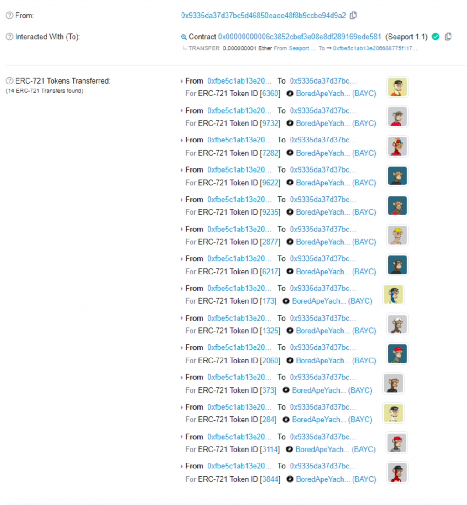
了解這個攻擊手法後，防禦的方式就很簡單：只要在 Opensea 以外的網站看到 Seaport 相關的訊息就不要簽名，因為很有可能是釣魚。
當然也不止 Opensea 合約有這樣的風險，任何 NFT marketplace 都可能有一樣的攻擊方式，例如 Blur 這個 NFT marketplace 的 bulk listing 簽名資料長得像以下這樣（參考連結）：
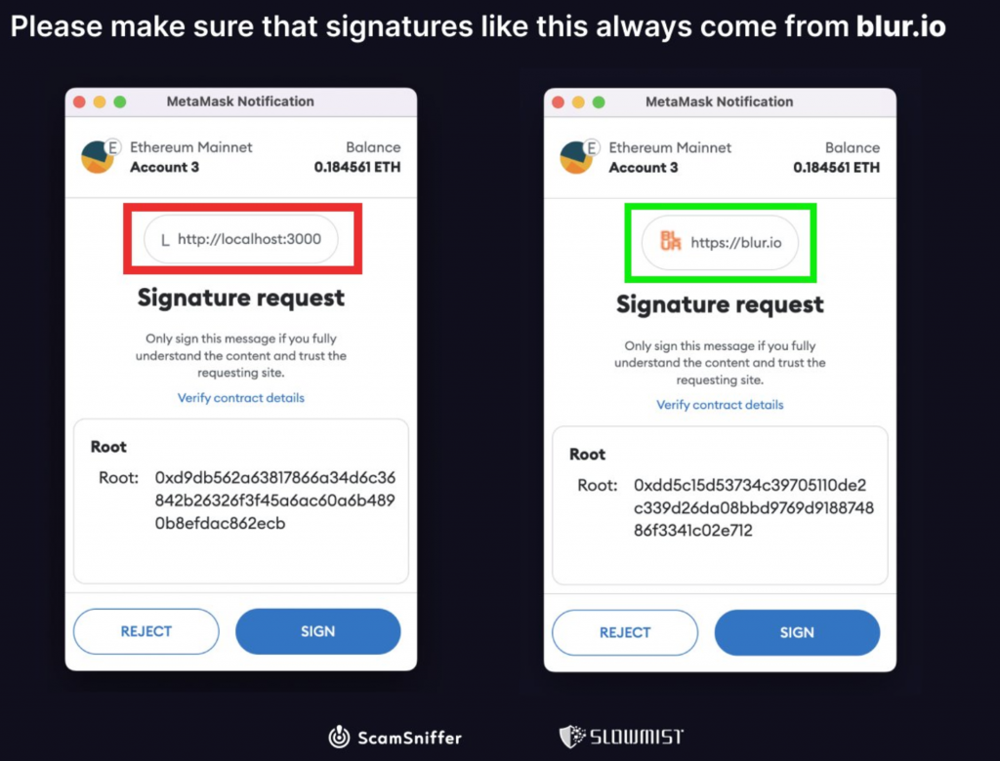
簽下去就有風險讓自己所有在 Blur 上 Approve 過的 NFT 全部被轉走。這個因為簽名中不會顯示 Blur 所以更容易被騙。因此最謹慎的方式是看到任何 Typed Data 如果是看不懂的話就不要簽，因為有可能被拿來送到某個你不知道的合約觸發了某些效果。
在 Day 25 中有介紹到部分 ERC-20 Token 會有 Permit 的功能，方便使用者不需要發送獨立的 Approve 交易就可以透過簽名 Typed Data 的方式來授權自己的 ERC-20 Token。而這就類似上面 NFT marketplace 的攻擊方式：只要騙使用者簽名一個 Permit 訊息，駭客就能把這個簽章送到對應的 ERC-20 合約中允許自己把使用者的所有幣轉走。因此當簽名訊息中有 Permit 相關文字時也要特別小心。
這個簽名方式非常危險，它是當我們在簽名所有交易或是訊息時最底層的一個方法。原理是不管交易或是訊息最終都會被 hash 成一個 64 bytes 的資料，並呼叫 eth_sign 方法來產生最終的簽名。因此如果駭客直接請求 eth_sign 的簽名，他就可以要求簽任何的交易或訊息而讓使用者完全看不出來！簽名請求如下：
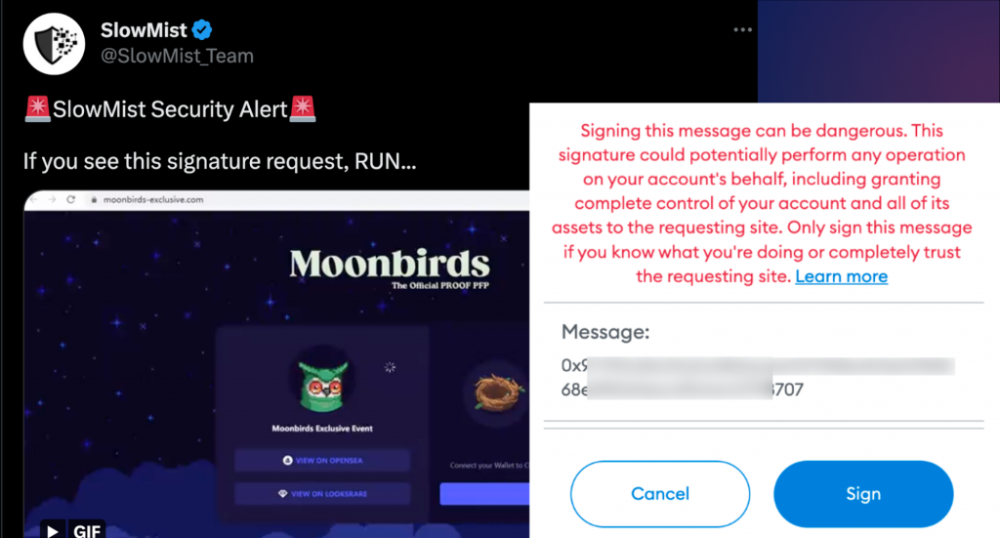
（參考連結）
雖然有很長的警告訊息，但應該是還是有人忽略警告訊息按下簽名，導致資產被駭。因此最近 eth_sign 這個功能已經被 Metamask 預設關閉了（官方說明），也非常不建議使用者打開，因此如果不改設定的話就不會再遇到這個簽名請求了。
前面講到關於簽名交易跟 Typed Data 都會有風險，那麼簽名 Personal Message 呢？一般來說因為 Personal Message 不會被放到鏈上的智能合約中做驗證（原因在 Day 7 有提到），因此其實不會有什麼問題。
了解以上許多攻擊方式後，就可以總結幾個防禦的方法，主要是在進行任何簽名時要注意：
還有一個比較少人注意但有效的防禦方式，就是可以把已知的合約地址加入 Metamask 的 Contacts 中，這樣在簽名交易時就會顯示右邊自己設定的別名「Uniswap」而非左邊看不懂的 hex 字串：
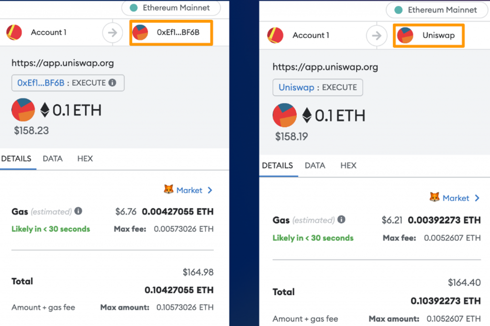
設定方式很簡單，只要在跟合約互動時點擊合約地址，幫他加一個 Nickname 後儲存就可以了。另外也可以在 Metamask 的設定頁面中找到 Contacts 新增常用的地址簿。相關步驟如下圖：
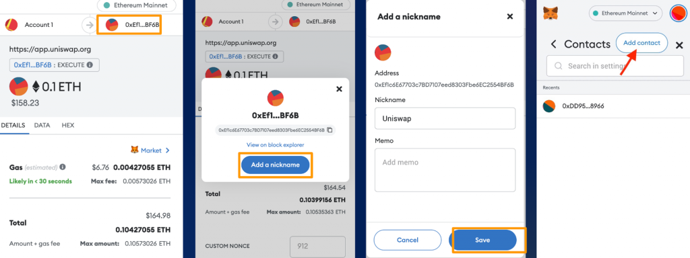
這樣就能省去每次還要到鏈上查這個地址的時間了！
今天我們介紹了許多區塊鏈上可能會遇到的詐騙/釣魚手法、背後的原理以及如何防禦。區塊鏈上的攻擊方式不斷推陳出新，因此未來還是很可能出現其他攻擊手法，因此最重要還是確保自己能理解所有正在進行的操作，才能把風險降到最低。明天會延續操作問題再介紹幾個案例，並把剩餘的錢包與裝置問題與防禦方式講解完。